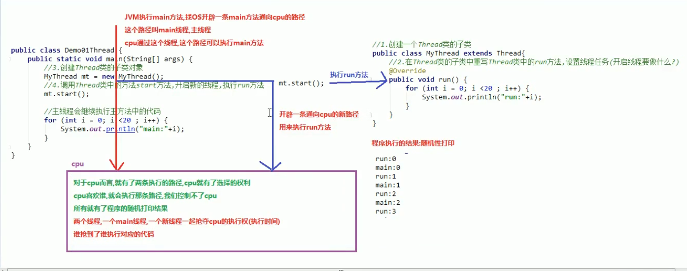
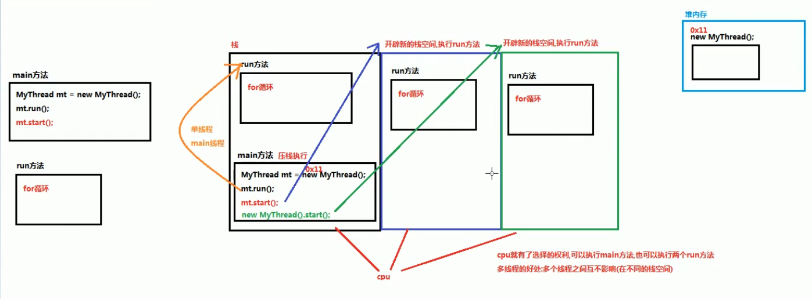

原文连接:https://www.cnblogs.com/324fch/p/11740347.html
异常
指的是程序在执行过程中，出现的非正常情况，最终会导致JVM的非正常停止
异常分类：编译异常，运行期异常
异常的产生过程分析

throw关键字：指方法中抛出指定异常
使用格式：throw new xxxException();
注意：1.必须写在方法内部2.new的对象必须是Exception或是Exception子类对象3.throw关键字抛出这个异常，我们就必须处理这个异常
Objects非空判断
Objects.requireNonNull(对象，信息)
throws关键字：异常处理的第一种方式，交给别人处理
注意：1.必须写在方法声明处2.声明的异常必须是Exception或是Exception子类
try...cash格式
try{}cash{}
可以使用多个cash处理异常，子类异常要放在父类异常的上面
finally语句块：无论程序有无异常发生，都会执行fianlly语句块
注意：1.不能单独使用，要和try一起使用
子父类异常：父类异常是什么样，子类异常就什么样
Throwable定义了3个异常处理的方法
String getMessage() 返回次Throwable简短描述
String toString() 返回次Throwable的详细信息字符串
void printStackTrace() JVM打印异常对象信息，全面。
自定义异常类
public class xxxException extends Exception{
添加一个无参数的构造方法，
添加一个带异常信息的构造方法
}
多线程：效率高，多个线程之间互不影响
并发:同一时间段发生，（交替执行）
并行:同一时刻发生，（同时执行）
进程：指一个内存中运行的应用程序
线程：是进程的执行单元
一个程序运行后有一个进程，一个进程可以有多个线程
线程调度
分时调度：所有线程轮流使用CPU使用权，平均分配每个线程占用cpu时间
抢占式调度：优先让优先级高的线程使用CPU
多线程原理

多线程内存分析图

主线程：执行主方法的线程
创建多线程的第一种方式
1.创建Thread类的子类
2.重写Thread类的run方法
3.创建Thread类子类对象
4.调用Thread的start方法
常用方法
getName() 获取该线程名称
currentThread() 返回当前正在执行的线程对象的引用
设置线程的名称
1.setName()
2.创建一个带参数的构造方法，参数传递线程名称，调用父类的带参构造方法，把线程名称传递给父类，让父类给子类起一个名字
Runanble接口
1.创建一个Runable接口的实现类
2.重写run方法
3.创建一个Runable接口的实现类对象
4.创建一个Thread类对象，传递参数为Runable接口实现类对象
5.调用Thread类中的start方法
好处：1.避免了单继承的局限性2.增强了程序的扩展性，降低了程序的耦合性
匿名内部类实现进程创建
格式
new 父类/接口(){
重写父类/接口方法;
}